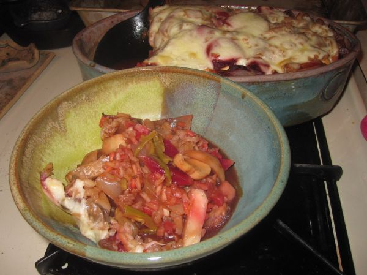

Green Rice Casserole

Photo: Tobyotter (CC BY 2.0)
Directions
- Combine 1 cup Monterey Jack and next 4 ingredients in a large bowl, stir in rice, veggies and onions. Spoon into lightly greased large casserole dish. Bake: uncovered at 375 degrees for about 20 minutes. Sprinkle with remaining cheese and bake 5 minutes more.
- Combine 1 cup Monterey Jack and next 4 ingredients in a large bowl, stir in rice, veggies and onions. Spoon into lightly greased large casserole dish. Bake: uncovered at 375 degrees for about 20 minutes. Sprinkle with remaining cheese and bake 5 minutes more.
https://baron-3dl.github.io/normans-kitchen/recipe/green-rice-casserole.html